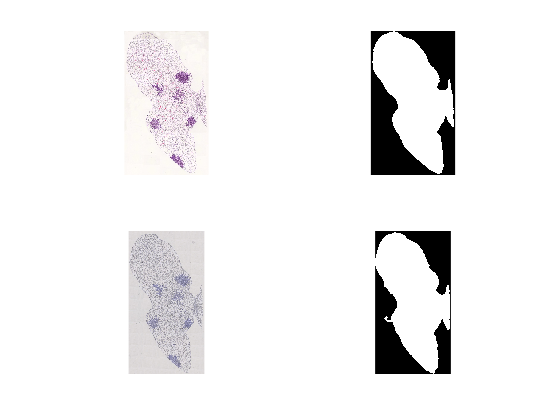
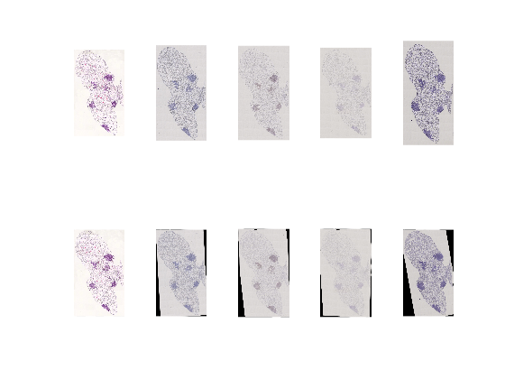

Contents
clear;clc;close all
mainf=uigetdir;
filesm=dir(mainf);
filesm=filesm(3:length(filesm));
dirFlags = [filesm.isdir];
dirFlags=logical(abs(dirFlags-1));
filesm= filesm(dirFlags);
scaling_factor=1;
create saving folder for results
folder=mainf;
t = datetime('now');
DateString = datestr(t);
DateString2=strrep(DateString,' ','_');
DateString2=strrep(DateString2,'-','');
DateString2=strrep(DateString2,':','');
foldersave=fullfile(mainf,strcat('Results',DateString2));
mkdir(foldersave);
load images
for im=1:length(filesm)
fullFileName = fullfile(filesm(im).folder, filesm(im).name);
im_original =(imread(fullFileName));
images(im).name=filesm(im).name;
images(im).or_image=im_original;
end
scaling of images
for p=1:length(images)
im_original=images(p).or_image;
[H,W]=size(im_original);
im= imresize(im_original,scaling_factor);
images(p).or_image_resized=im;
end
first rough segmentation
for p=1:length(images)
rough segmentation
hsvImage = rgb2hsv(images(p).or_image_resized);
vImage = hsvImage(:,:,3);
thresh = multithresh(vImage,9);
seg_I = imquantize(vImage,thresh(8));
mask=seg_I==1;
se =strel('disk',5);
dilatedI = imdilate(mask,se);
BW2 = imfill(dilatedI,'holes');
CC= bwconncomp(BW2);
BW=zeros(size(BW2));
numPixels = cellfun(@numel,CC.PixelIdxList); [biggest,idx] = max(numPixels); BW(CC.PixelIdxList{idx}) = 1;
binaryImage=BW;
area0=sum(BW(:));
[H1, W1]=size(BW);
ratioarea= area0/(H1*W1);
if ratioarea<0.15
hsvImage = rgb2hsv(images(p).or_image_resized);
vImage = hsvImage(:,:,3);
thresh = multithresh(vImage,9);
seg_I = imquantize(vImage,thresh(9));
mask=seg_I==1;
se =strel('disk',1);
dilatedI = imdilate(mask,se);
BW2 = imfill(dilatedI,'holes');
CC= bwconncomp(BW2);
BW=zeros(size(BW2));
numPixels = cellfun(@numel,CC.PixelIdxList); [biggest,idx] = max(numPixels); BW(CC.PixelIdxList{idx}) = 1;
binaryImage=BW;
end
windowSize = 15;
kernel = ones(windowSize) / windowSize ^ 2;
blurryImage = conv2(single(binaryImage), kernel, 'same');
binaryImage = blurryImage > 0.5;
BW3 = imfill(binaryImage,'holes');
images(p).im_binary_mask=BW3;
end
or_image0=images(1).im_binary_mask;
save white segmented blobs (optional):
for p=1:length(images)
imwrite(images(p).im_binary_mask, fullfile(foldersave,strcat(erase(images(p).name,'.jpg'),'_whiteblob.tif')));
end
uncomment for plots
figure;
subplot(2,2,1);imshow(images(1).or_image_resized);
subplot(2,2,2);imshow(images(1).im_binary_mask);
subplot(2,2,3);imshow(images(2).or_image_resized);
subplot(2,2,4);imshow(images(2).im_binary_mask);

biopsy rotation (pre-alignment)
im_original=or_image0;
i1=images(1).or_image_resized;
for p=2:length(images)
Find best rotation angle
im2 =images(p).im_binary_mask;
rotacion = funperrota(im_original, im2);
correlation = [rotacion.correlation].';
absdiff = [rotacion.absdiff].';
[a,b]=max(correlation(:));
angle(p)=rotacion(b).angle;
rotate each image (mask and original)
i2=images(p).or_image_resized;
[i3new,i4new,i1new,i2new,dispvector] = rotation_nol_octubre(im_original, im2,i1,i2,rotacion(b).angle);
images(1).im_binary_mask_rotated=i3new;
images(1).or_image_resized_rotated=i1new;
images(p).or_image_resized_rotated=i2new;
images(1).white_blob_rotated=i3new;
images(p).white_blob_rotated=i4new;
images(p).im_binary_mask_rotated=i2new;
imwrite(i4new, fullfile(foldersave,strcat(erase(images(p).name,'.jpg'),'_whiteblob_rotated.tif')));
imwrite(i2new, fullfile(foldersave,strcat(erase(images(p).name,'.jpg'),'_im_rotated.tif')));
end
close all;
Global registration:
FIXED=double(images(1).white_blob_rotated);
for p=2:length(images)
MOVING=double(images(p).white_blob_rotated);
or_im=images(p).or_image_resized_rotated;
[MOVINGREG,tform,im2] = registerImagesLaura_nol(MOVING,FIXED,or_im);
images(p).MOVINGREG=MOVINGREG;
images(p).MOVINGREG_blob_registrated=logical(MOVINGREG.RegisteredImage);
images(p).MOVINGREG_image=im2;
images(1).MOVINGREG_blob_registrated=FIXED;
images(1).MOVINGREG_image=images(1).or_image_resized_rotated;
end
figure;
subplot(2,length(images),1);imshow(images(1).or_image_resized);
for p=2:length(images)
subplot(2,length(images),p);imshow(images(p).or_image_resized)
end
subplot(2,length(images),length(images)+1);imshow(images(1).MOVINGREG_image);
for p=2:length(images)
subplot(2,length(images),length(images)+p);imshow(images(p).MOVINGREG_image)
end

save the registered images:
for p=1:length(images)
image=images(p).MOVINGREG_image;
baseFileName=strcat('rotated_registered_',images(p).name);
folder2=foldersave;
fullFileName = fullfile(folder2, baseFileName);
imwrite(image, fullFileName);
end
save the structure
save(fullfile(folder2, 'imagesregistrobueno.mat'), 'images');